Dig deep. Strike rich.
Five sites. Eighteen machines. A fixed pool of $GREEN that shrinks a little every day — and a jackpot you can't see until you pull the rig. The same token every GreenLifeGame title shares, inside its own mining economy.
Mother Lode is the platform's Medium tier — a step up from Simple Farmer's clean grow loop, a step short of GREEN LIFE's full economy. You buy in once, deploy rigs across five sites, and every rig earns its share of a fixed pool while it works. Three quarters of what it earns streams straight to your balance. The last quarter feeds a crit-dig pool your rig rolls against, blind — and you don't find out what it struck until you pull it out of the ground.
One buy-in opens the whole operation and rips your starter pack on the spot. Every rig you put underground raises your share of the daily pool — and starts rolling for crit-digs on its own cooldown, silently.
Equipment only enters the game through packs, and every pack opens the moment you buy it. There's no sealed pack to flip — what you pull is what you work with.
Pick a site and deploy. Each Earth site takes a different slice of the daily pool, and that slice is re-rolled on a hidden schedule — so it pays to check which ground is running hot.
Whatever it struck pays instantly. But a pull costs the rig a quarter of its power every time, so it wears down over about five runs and then burns.
A deployed rig's winnings are invisible until you pull it. There is no running total anywhere in the game, deliberately — a visible counter turns a jackpot into a spreadsheet, and the whole point is not knowing.
Every Earth site draws a different share of the day's emissions, re-rolled on a schedule you can't see the end of. A site running hot pays more per unit of Mining Power than a cold one — the map is a decision, not scenery. The crit-dig pool is the exception: it splits evenly and permanently across all five sites, every single day, and the heat roll never touches it.
Open-pit surface rock. Where every operation starts.
Deep mineral seams under the ice.
Hard rock, hot ground, the real depths.
4,800 m down — polymetallic nodules on the sea floor.
South pole, permanent shadow, −233 °C. Its own rules entirely.
No invented hardware and no crypto-mining flavour anywhere — these are real metal-mining machines, from a crew with hand tools up to a bucket-wheel excavator, plus three pieces of genuine NASA lunar equipment you can only run on the Moon. A rig's Mining Power sets its share of the pool; its cooldown sets how often it rolls for a crit-dig; its cycle is how long a full run takes before it needs pulling.
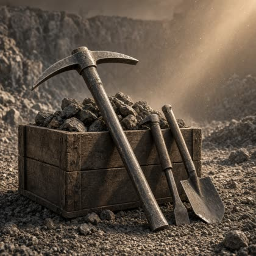
Pickaxe Crew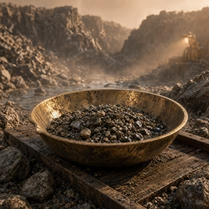
Gold Pan Rig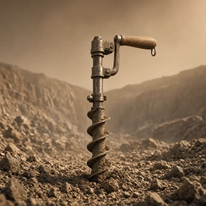
Hand Auger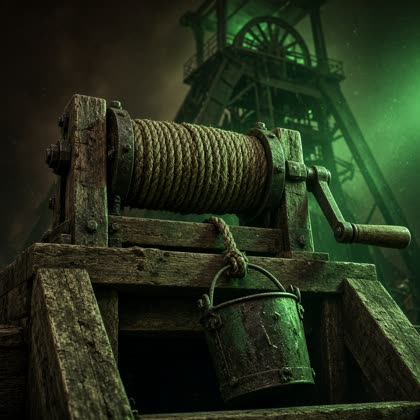
Windlass Hoist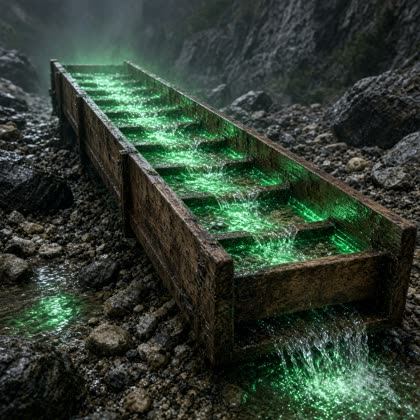
Long Tom Sluice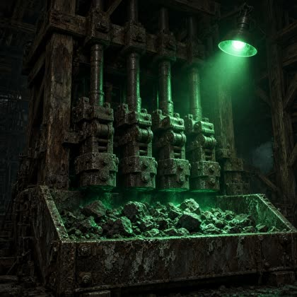
Stamp Mill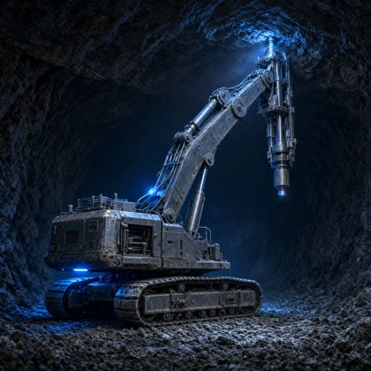
Roof Bolter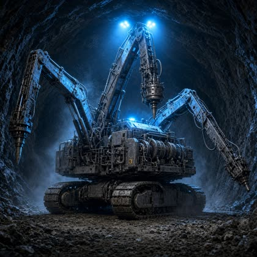
Drilling Jumbo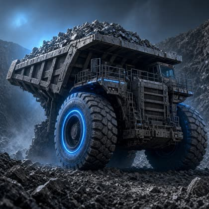
The Giant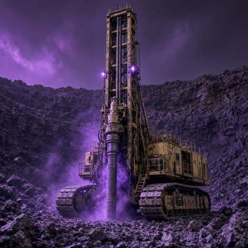
Blasthole Rig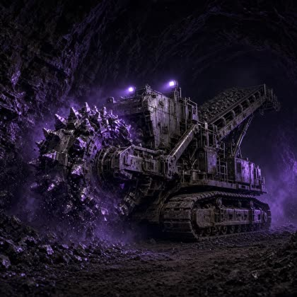
Continuous Miner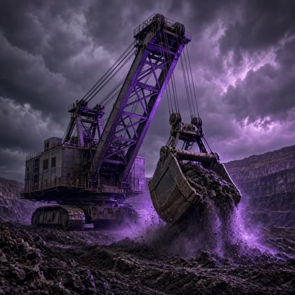
Dragline Excavator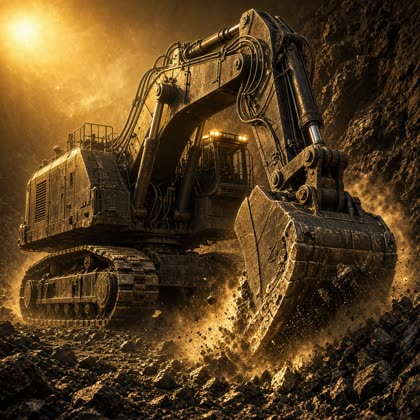
Hydraulic Mining Shovel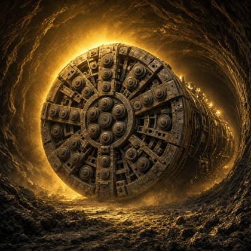
Tunnel Boring Machine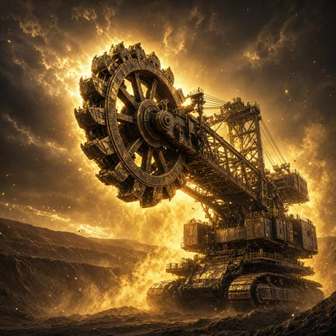
Bucket-Wheel Excavator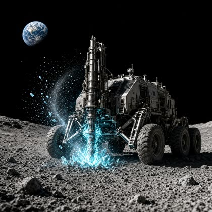
PRIME-1 Drill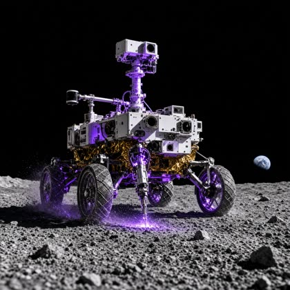
VIPER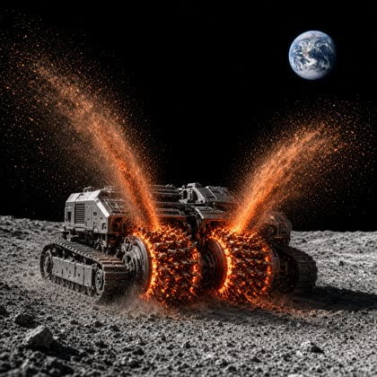
RASSORPRIME-1, VIPER and RASSOR are all real NASA lunar hardware. They work at full strength on the Moon and can go nowhere else — and an Earth rig sent up there runs at half power.
Lunar south-pole ice mining, in crater floors that have never seen sunlight sitting beside rims in near-permanent daylight — the coldest measured places in the solar system. Everything about the Moon is a trade.
Crit-digs land less often up here, but every one pays triple.
Nothing you can buy speeds up a lunar rig. The Moon is immune to the entire boost system.
The Moon never joins the daily heat roll. It takes its ordinary share of Mining Power and nothing more.
Mother Lode earns from a 200B $GREEN emissions pool — its own slice of the platform's fixed 1 trillion supply, in its own vault. The pool releases 0.05% of whatever remains each day, so it decays smoothly and never quite empties. Your earnings are your share of total network Mining Power, which means a bigger rig helps you and not the pool: making every machine more powerful would just raise the denominator too.
1 trillion $GREEN minted once across the whole platform, then never again. Mother Lode's 200B is its own vault — no game's contract ever touches another's.
Every $GREEN spent inside the game is burned forever. Supply only ever shrinks.
Earnings accrue every second, but the Claim button waits three hours between uses — the one mechanic that's Mother Lode's alone.
Mother Lode is in active development. Nothing here touches Solana yet, there is no $GREEN token in existence, and no part of this game takes real money today. When that changes, it will change here first.